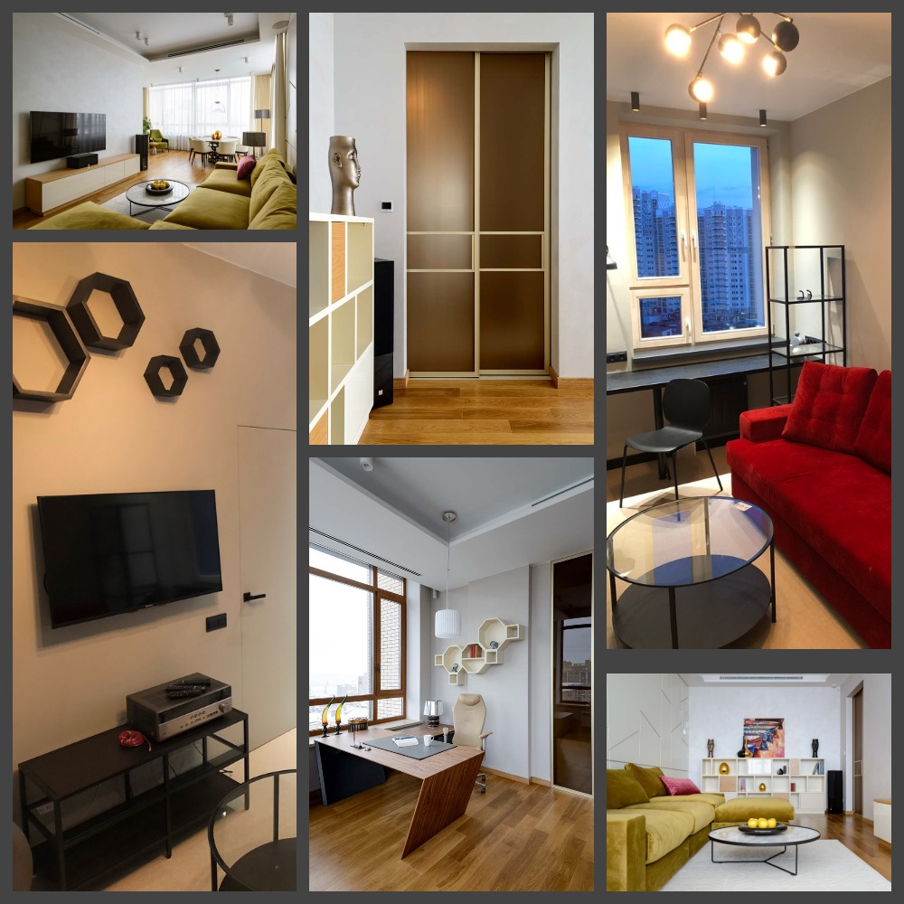
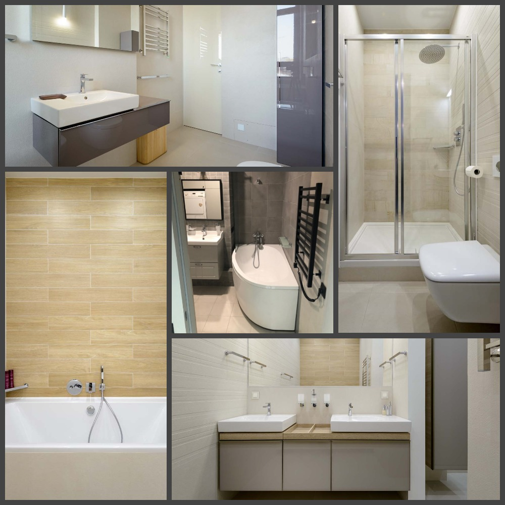
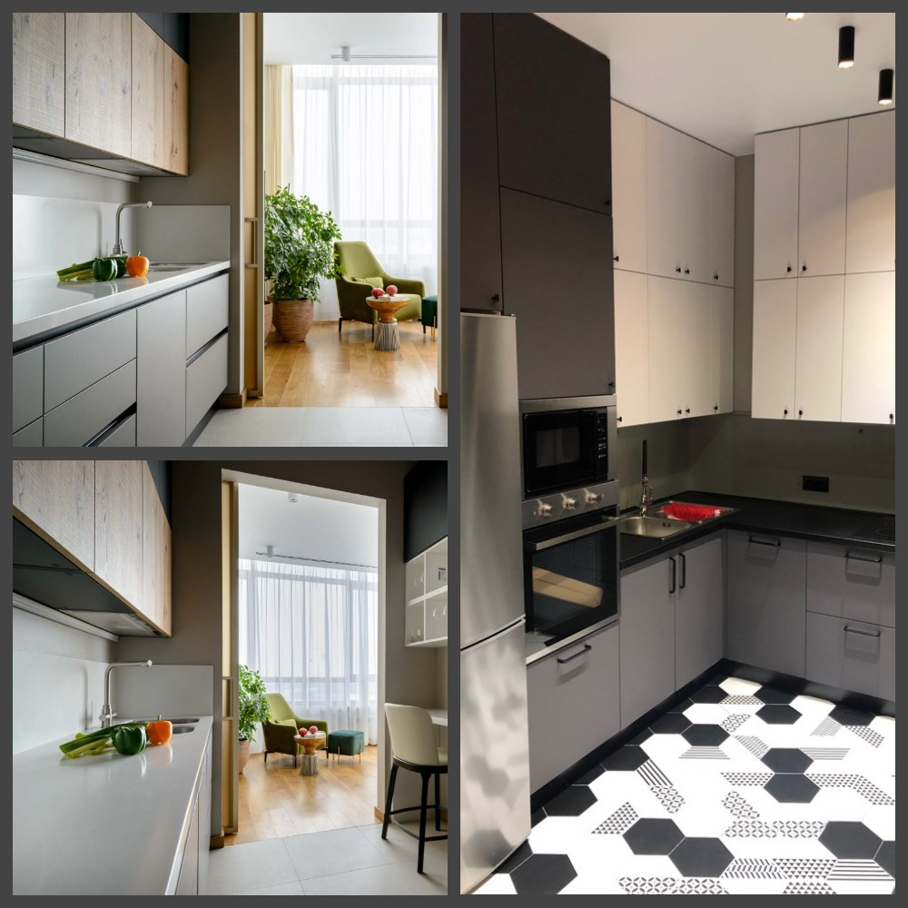
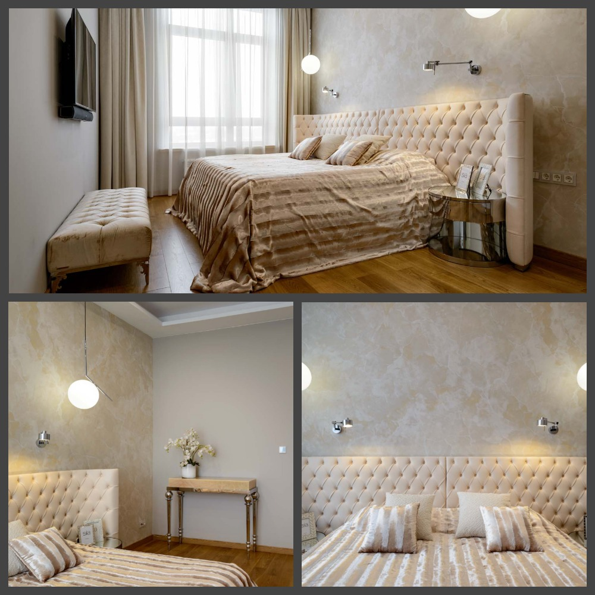
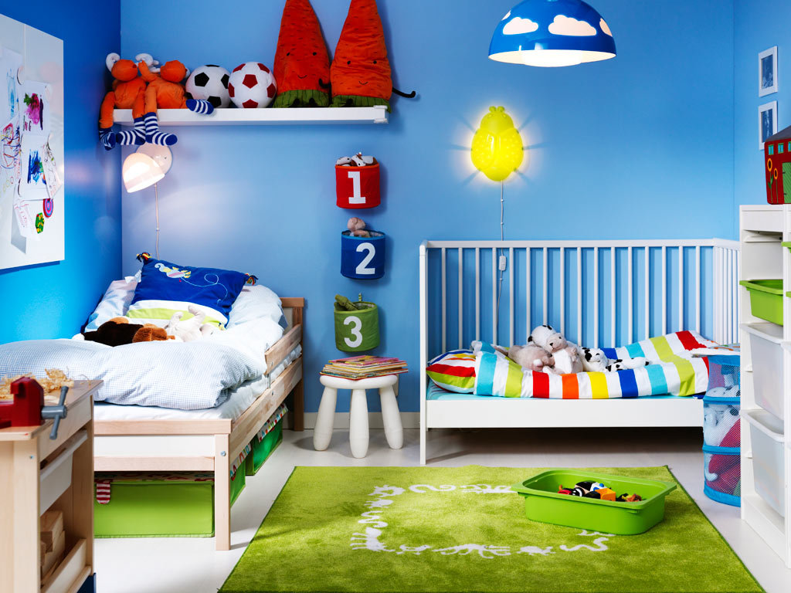
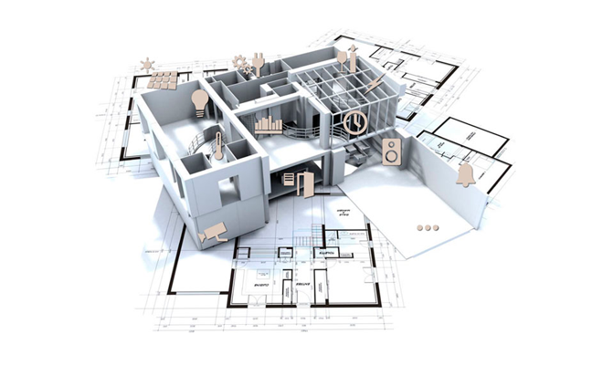
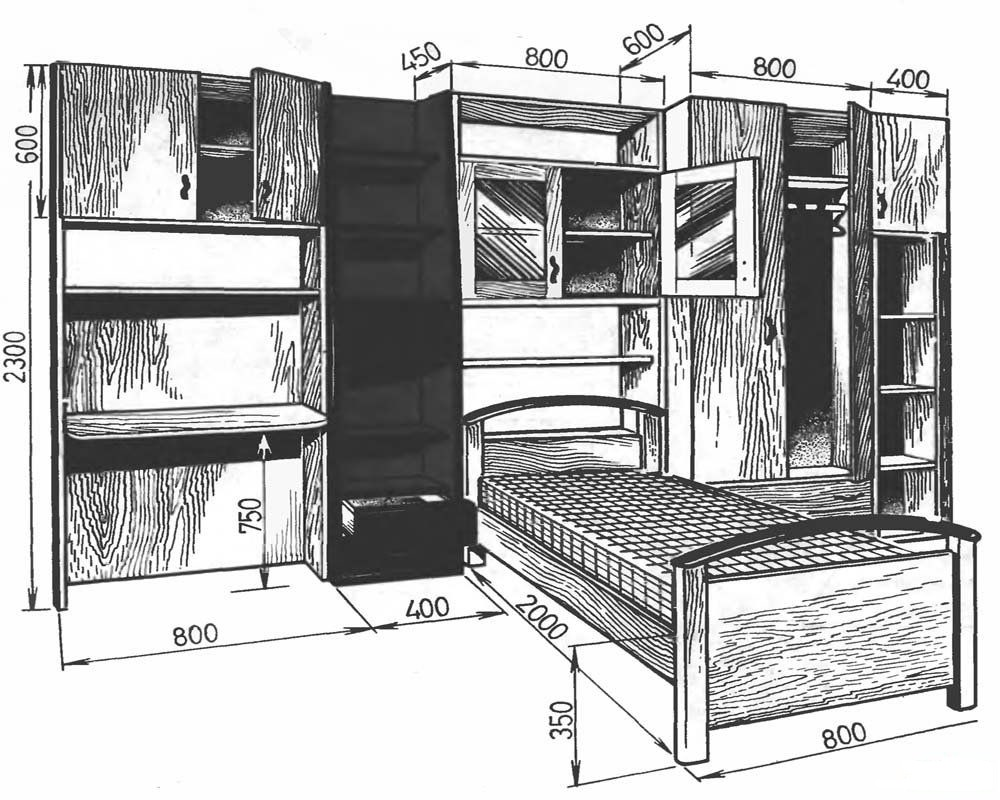

Wood Doctor
Телефон: 7 (911) 140-28-64W/D TEAM
Ремонт в Петербурге
Наши Услуги и цены
Услуги
Ремонт квартир "под ключ"
Ремонт квартир «под ключ» — это комплекс работ, включающий не только декоративную отделку помещений, но и разводку электрики, замену сантехнических труб, обновление напольного покрытия и многое другое. Все эти мероприятия направлены на повышение уровня комфорта и снижение стоимости обслуживания жилья.
Обращаясь к нам, вы можете уже иметь готовый дизайн проект или довериться нашим специалистам, которые предложат интересные решения в части обустройства интерьера любого современного помещения. Параллельно согласовывается бюджет ремонта и разрабатывается смета предполагаемых закупок.
Ремонт ванных комнат
Ремонт ванной комнаты под ключ в Новосибирске - одна из самых распространенных услуг в ремонтной среде. Ни один ремонт квартиры не обходится без качественного ремонта ванной, который позволит наслаждаться интерьером и ощущать комфорт от пребывания в этом помещении.
Мы выполним все виды ремонта ванной комнаты - от косметического, капитального, до евроремонта ванной комнаты по дизайн проекту.
Ремонт на кухне
Самостоятельно сделать качественный ремонт в кухне крайне сложно и затратно.
- Повышенная влажность;
- Cпециальная мебель;
- Cистема вентиляции;
- Большое количество бытовой техники;
Все должно быть учтено до начала ремонта. Мы сделаем из вашей старой и неудобной кухни функциональное и эстетическое пространство для создания кулинарных шедевров и совместных воскресных обедов.
Так же у нас можно заказать мебель для кухни, под ваши нужды и размеры. Шкафчики, столешницы, наш мастер сделает для вас качественную мебель за приемлимую цену
Ремонт в спальне
Ремонт спальни под ключ рекомендуется начать с разработки схемы мебелировки и расстановки разной техники.
- Вы должны понимать, каких габаритов будет Ваша мебель, чтобы все двери и выдвижные ящики могли беспрепятсвенно открываться, а комната не была перегружена.
- Вы должны понимать, где будет стоять различная техника, чтобы элементарно спланировать розетки.
- Все поверхности и оконные системы должны быть "дышащими", это напрямую влияет на качество Вашего сна, значит, влияет на здоровье.
Со всеми этими вопросами мы поможем вам разобраться, подскажем и предложим лучший вариант
Ремонт в детской
Ремонт детской - это возможность реализовать наши десткие фантазии. Кто из нас в детстве не мечтал жить на космической станции, в прекрасном дворце или даже на необитаемом острове?
Мы имеем все возможности, чтобы создать вышим любимым детям сказку, в которую они будут возвращаться каждый день. Кроме того, при ремонте детской мы сможем продумать весь необходимый функционал
- Рабочее место для учебы;
- Хранение одежды;
- Творческий и спортивный инвентарь.
Дизайн-проект
Дизайн квартир - это сложный вид работы: в ходе разработки дизайн-проекта необходимо учитывать многое:
- Технические нормы;
- Грамотно осуществить зонирование помещения;
- Предусмотреть освещение помещения;
- Предусмотреть зоны хранения.
При этом все визуальные образы, создаваемые дизайнером, должны радовать глаза заказчика, как на этапе разработке дизайна квартиры, так и на этапе конечной реализации проекта.
Хотите создать индивидуальный интерьер? Мечтаете о стильном дизайне в гостиной, спальне, детской, на кухне? Заказывайте в нашей компании дизайн-проект, мы сотрудничаем с дизайнером, который для вас проект любой сложности, поможет подобрать подходящие материалы.
Изготовление мебели
Мы предлагаем для Вас изготовить мебель на заказ, которая производится по индивидуальным проектам и размерам, наш мастер изготовит для вас мебель, которая подгоняется под любые размеры помещения, учитывая геометрию и архитектуру. А так же создадим и реализуем индивидуальный проект мебели как корпусной, так и встраиваемой.
Наши цены на изготовление мебели (кухни на заказ, детские, шкафы купе, гардеробные, мебель в ванную, компьютерные столы, стенки, горки, комоды) и другую корпусную мебель самые лояльные. Которые значительно отличаются от цены перекупов. Правильный расчет всех деталей будущей мебели это не только экономия пространства, но и Ваших денег!
Электромонтажные работы
| Услуга | Цена, Р |
|---|---|
| Монтаж электропроводки | |
| Монтаж кабельканала шириной до 25 мм на бетонной поверхности | 70 за пог.м. |
| Монтаж кабельканала шириной до 25 мм на гипсолите, гипсокартоне, дереве | 70 за пог.м. |
| Монтаж кабельканала шириной до 25 мм на кирпичной поверхности | 70 за пог.м. |
| Монтаж кабельканала шириной свыше 25 мм на бетонной поверхности | 100 за пог.м. |
| Монтаж кабельканала шириной свыше 25 мм на гипсолите, гипсокартоне, дереве | 100 за пог.м. |
| Монтаж кабельканала шириной свыше 25 мм на кирпичной поверхности | 140 за пог.м. |
| Монтаж проводки в штробе | 40 за пог.м. |
| Монтаж проводки открытым способом в гофре | 30 за пог.м. |
| Монтаж проводки открытым способом на скобах, на бетоне и кирпиче | 40 за пог.м. |
| Монтаж проводки открытым способом на скобах на гипсолите, дереве | 40 за пог.м. |
| Штроба размером 20×20 мм в ГКЛ изготовление | 120 за пог.м. |
| Штроба размером 20×20 мм в бетоне, шифере изготовление | 240 за пог.м. |
| Штроба размером 20×20 мм в кирпиче изготовление | 170 за пог.м. |
| Штроба размером 40×40 мм в ГКЛ изготовление | 170 за пог.м. |
| Штроба размером 40×40 мм в бетоне, шифере изготовление | 380 за пог.м. |
| Штроба размером 40×40 мм в кирпиче изготовление | 290 за пог.м. |
| Штроба размером 70×70 мм в ГКЛ изготовление | 240 за пог.м. |
| Штроба размером 70×70 мм в бетоне, шифере изготовление | 550 за пог.м. |
| Штроба размером 70×70 мм в кирпиче изготовление | 400 за пог.м. |
| Штроба размером 100×100 мм в ГКЛ изготовление | 400 за пог.м. |
| Штроба размером 100×100 мм в бетоне, шифере изготовление | 790 за пог.м. |
| Штроба размером 100×100 мм в кирпиче изготовление | 690 за пог.м. |
| Установка электроточек | |
| Установка автомата электрического двухполюсного | 400 за шт |
| Установка автомата электрического однополюсного | 200 за шт |
| Установка автомата электрического трехполюсного | 600 за шт |
| Монтаж бокса наружного под электроавтоматы | 680 за шт |
| Установка звонка с кнопкой | 250 за шт |
| Коммутация коробки распаячной | 340 за шт |
| Установка коробки распаячной наружной | 200 за шт |
| Установка люстры простой (демонтаж старой включен в стоимость) | 540 за шт |
| Отверстия для подрозетника или коробки распаячной, выборка в бетоне | 400 за шт |
| Отверстия для подрозетника или коробки распаячной, выборка в кирпиче, гипсолите, дереве | 400 за шт |
| Установка электрощита, внутренний до 12 модулей | 2000 за шт |
| Установка электрощита, внутренний до 24 модулей | 2400 за шт |
| Установка электрощита, внутренний до 36 модулей | 2800 за шт |
| Установка электрощита, накладной до 12 модулей | 940 за шт |
| Установка электрощита, накладной до 24 модулей | 1200 за шт |
| Установка электрощита, накладной до 36 модулей | 1600 за шт |
| Монтаж подрозетника (коробки установочной, "стакан") | 110 за шт |
| Установка разветвителя телефонного и телевизионного | 250 за шт |
| Подключение реостата (диммера) для регулировки яркости света | 250 за шт |
| Установка розетки электрической, компьютерной, TV, ТФ или выключателя наружнего (прокладка кабеля оплачивается отдельно) | 200 за шт |
| Установка розетки электрической, компьютерной, TV, ТФ или выключателя внутреннего (прокладка кабеля оплачивается отдельно) | 240 за шт |
| Установка светильника мебельного внутреннего (прокладка проводки оплачивается отдельно) | 200 за шт |
| Установка светильника настенного (прокладка проводки оплачивается отдельно) | 250 за шт |
| Установка и подключение светильника потолочного типа "Армстронг" (прокладка проводки оплачивается отдельно) | 340 за шт |
| Установка светильника точечного (прокладка проводки оплачивается отдельно) | 80 за шт |
| Установка счетчика электрического однофазного | 400 за шт |
| Установка счетчика электрического трехфазного | 680 за шт |
| Замена старой электрической точки | 140 за шт |
| Установка трансформатора для галогеновых светильников | 340 за шт |
| Установка УЗО двухполюсного | 470 за шт |
| Установка УЗО четырехполюсного | 730 за шт |
| Вентилятор в вытяжке, установка с подключением (монтаж и демонтаж вентиляционной решетки оплачивается отдельно) | 400 за шт |
| Установка и подключение вентилятора канального накладного | 800 за шт |
| Вытяжка кухонная, монтаж с подключением | 2000 за шт |
| Установка сушилки электрической для рук (прокладка проводки оплачивается отдельно) | 400 за шт |
| Подключение стиральной машины | 470 за шт |
| Подключение электроплиты (прокладка кабеля оплачивается отдельно) | 470 за шт |
| Заземление электроприбора | 8000 за шт |
| Услуга | Цена |
|---|---|
| Демонтаж автомата | 80 за шт |
| Демонтаж кабельканала (короба) | 20 за пог. м. |
| Демонтаж коробки распаячной | 240 за шт |
| Демонтаж проводки электрической в кабельканале | 20 за пог. м. |
| Демонтаж проводки электрической открытой | 20 за пог. м. |
| Демонтаж счетчика электрического | 80 за шт |
| Демонтаж точки электрической | 60 за шт |
| Услуга | Цена, Р |
|---|---|
| Сверление отверстий под установку точечного светильника в гипсокартоне | 170 за шт |
| Сверление отверстий под установку точечного светильника в реечном потолке | 250 за шт |
| Сверление сквозное в бетонной стене толщиной до 25 см | 250 за шт |
| Сверление сквозное в кирпичной стене толщиной до 25 см | 200 за шт |
| Сверление сквозное в мягких стенах толщиной до 25 см | 140 за шт |
Сантехника
| Услуга | Цена, Р |
|---|---|
| Демонтаж радиаторов отопления | 400 за шт |
| Демонтаж ванн чугунных | 1200 за шт |
| Демонтаж ванн акриловых | 600 за шт |
| Демонтаж раковины | 200 за шт |
| Демонтаж умывальника | 200 за шт |
| Демонтаж унитаза | 400 за шт |
| Демонтаж душевых кабин | 540 за шт |
| Демонтаж труб водопровода | 40 за пог. м. |
| Демонтаж труб отопления | 40 за пог. м. |
| Демонтаж труб канализации | 240 за шт |
| Демонтаж газовых плит | 340 за шт |
| Демонтаж котлов, водонагревателей | 600 за шт |
| Демонтаж смесителя | 200 за шт |
| Демонтаж полотенцесушителя | 400 за шт |
| Демонтаж сантехнических акссесуаров | 50 за шт |
| Демонтаж фитингов | 40 за шт |
| Демонтаж вентилей, кранов, редукторов, фильтров | 60 за шт |
| Услуга | Цена, Р |
|---|---|
| Установка радиаторов отопления | 2950 за шт |
| Установка ванны чугунной простой 1,5 м | 3340 за шт |
| Установка ванны чугунной простой 1,7 м | 3600 за шт |
| Установка ванны металлической (акриловой) простой 1,5 м | 1470 за шт |
| Установка ванны металлической (акриловой) простой 1,7 м | 1760 за шт |
| Установка ванны чугунной угловой | 4000 за шт |
| Установка ванны металлической (акриловой) угловой | 2200 за шт |
| Установка ванны с гидромассажем | 4650 за шт |
| Установка унитаза простого | 800 за шт |
| Установка унитаза усложненного (угловой и т.п.) | 1030 за шт |
| Установка биде | 1340 за шт |
| Установка лейки гигиентической | 200 за шт |
| Установка инсталяции (без унитаза, умывальника и т.п.) | 1600 за шт |
| Установка раковины простой | 540 за шт |
| Установка "тюльпана" простого | 800 за шт |
| Установка мойки кухонной (без выреза в столешнице) | 540 за шт |
| Установка "Мойдодыра" простого | 1130 за шт |
| Установка "Мойдодыра" усложненного (с полкой и т.п.) | 1340 за шт |
| Установка душевой кабины простой со сборкой | 2670 за шт |
| Установка душевой кабины усложненной со сборкой (договорная) | 3900 за шт |
| Установка стиральной машины | 590 за шт |
| Установка посудомоечной машины | 1200 за шт |
| Установка смесителей | 460 за шт |
| Установка смесителей настенных | 560 за шт |
| Установка душевой стойки для лейки смесителя | 200 за шт |
| Установка сантехнических аксессуаров (крючки, мыльницы и т.п.) | 60 за шт |
| Установка полотенцесушителя | 2000 за шт |
| Установка водонагревателя накопительного | 1000 за шт |
| Установка водонагревателя проточного | 800 за шт |
| Штробление ж/б стен под трубу диаметром до 32 мм | 250 за пог. м. |
| Штробление кирпичных стен под трубу диаметром до 32 мм | 170 за пог. м. |
| Штробление гипсовых стен под трубу диаметром до 32 мм | 170 за пог. м. |
| Штробление бетонного пола под трубу диаметром до 32 мм | 200 за пог. м. |
| Штробление ж/б стен под трубу диаметром более 32 мм | 340 за пог. м. |
| Штробление кирпичных стен под трубу диаметром более 32 мм | 280 за пог. м. |
| Штробление гипсовых стен под трубу диаметром более 32 мм | 340 за пог. м. |
| Штробление бетонного пола под трубу диаметром более 32 мм | 540 за пог. м. |
| Обратная заделка штроб | 145 за пог. м. |
| Врезка в стояк отопления из стальных труб | 800 за шт |
| Врезка в сеть трубопроводов из стальных труб | 800 за шт |
| Врезка в сеть трубопроводов канализации из чугунных труб | 1600 за шт |
| Врезка в сеть трубопроводов канализации из труб ПВХ | 120 за шт |
| Прокладка канализационных труб | 80 за пог. м. |
| Установка ПВХ отводов, тройников для канализации | 80 за шт |
| Прокладка металлических труб водоснабжения и отопления на сварке | 200 за пог. м. |
| Прокладка металлических труб водоснабжения и отопления на резьбовом соединение | 120 за пог. м. |
| Резьбовое соединение стальных труб | 120 за шт |
| Утепление труб | 50 за пог. м. |
| Прокладка металлопластиковых труб | 120 за пог. м. |
| Установка обжимных фитингов для металлопластиковых труб | 110 за шт |
| Установка пресс-фитингов для металлопластиковых труб | 200 за шт |
| Прокладка медных труб | 170 за пог. м. |
| Установка фитингов для медных труб | 200 за шт |
| Установка фитингов для медных труб с помощью пайки | 200 за шт |
| Прокладка труб из сшитого полиэтилена РЕ-Х | 170 за пог. м. |
| Установка фитингов для труб из сшитого полиэтилена РЕ-Х | 170 за шт |
| Прокладка труб из полипропилена (РР) или полибутена (РВ) | 170 за пог. м. |
| Установка фитингов для труб из полипропилена (РР) или полибутена (РВ) с помощью диффузионной сварки | 170 за шт |
| Установка шарового крана | 200 за шт |
| Установка зеркал | 400 за шт |
| Установка фильтров глубокой очистки | 400 за шт |
| Установка фильтров тонкой очистки | 800 за шт |
| Установка фильтров многоступенчатой системы очистки воды | 1400 за шт |
| Установка сгонов | 120 за шт |
| Установка тройников | 200 за шт |
| Установка переходников, ниппелей, бочат, угольников, удлиннителей, муфт | 120 за шт |
| Установка манжетты резиновой | 60 за шт |
| Установка крана для стиральной машины | 200 за шт |
| Установка подводки для воды, газа | 200 за шт |
| Опресовка системы ХВС, ГВС (стандартный санузел) | 1600 за шт |
| Установка временного унитаза | 340 за шт |
| Установка встроенных смесителей | 1000 за шт |
| Установка встроенных кранов | 800 за шт |
Потолки
| Услуга | Цена, Р |
|---|---|
| Демонтаж реечных потолков | 50 за м2 |
| Демонтаж подвесных потолков из ГКЛ, досок, панелей ПВХ, вагонки | 120 за м2 |
| Демонтаж подвесных потолков "Армстронг" | 80 за м2 |
| Снятие старой краски | 100 за м2 |
| Демонтаж лепнины без сохранения | 80 за пог. м. |
| Снятие старой штукатурки потолков | 140 за м2 |
| Демонтаж деревянных перекрытий | 100 за м2 |
| Снятие обоев с потолков | 110 за м2 |
| Расчистка потолка от побелки с промывкой | 120 за м2 |
| Снятие полистерольных плиток | 30 за м2 |
| Снятие старой шпатлевки | 130 за м2 |
| Расчистка рустов | 40 М.п. |
| Услуга | Цена, Р |
|---|---|
| Устройство подвесных потолков из ГКЛ 1-й уровень с устройством металлокаркаса | 350 за м2 |
| Устройство подвесных потолков из ГКЛ 2-й уровень с устройством металлокаркаса | 420 за м2 |
| Устройство подвесных потолков из ГКЛ 3-й уровень с устройством металлокаркаса или 2- ой уровень с нишами | 700 за м2 |
| Добавляется при криволинейной границе | 300 за м2 |
| Устройство подвесных потолков из плит "Армстронг" | 250 за м2 |
| Монтаж реечных, зеркальных потолков мал. площади до 8 кв.м (санузлы, кухни) | 340 за м2 |
| Монтаж реечных, зеркальных потолков бол. площади свыше 8 кв.м | 200 за м2 |
| Утепление потолка наклеиванием пенопласта | 180 за м2 |
| Устройство утепления потолка с постановкой дополнительного деревянного каркаса | 170 за м2 |
| Облицовка потолка плиткой стироловой | 110 за м2 |
| Устройство потолка из пластиковых реек или панелей ПВХ | 270 за м2 |
| Монтаж потолочного плинтуса | 80 пог. м. |
| Окраска потолочного плинтуса | 120 за пог. м. |
| Штукатурка потолка /10мм/20мм | 300 за м2 |
| Штукатурка потолка по сетке пластиковой | 300 за м2 |
| Штукатурка потолка по маякам наметом до 30 мм | 440 за м2 |
| Штукатурка потолка по маякам наметом свыше 30 мм | 470 за м2 |
| Монтаж металлической сетки | 80 за м2 |
| Расшивка, заделка трещин, рустов | 120 за пог. м. |
| Грунтовка потолков 1 слой | 30 за м2 |
| Шпатлевка потолка по ГКЛ с серпянкой | 230 за м2 |
| Шпатлевка потолка по штукатурке в два слоя | 210 за м2 |
| Шпатлевка потолка по сетке в два слоя | 250 за м2 |
| Финишное выравнивание шпатлевки при высококачественной окраске | 160 за м2 |
| Ошкуривание потолков | 60 за м2 |
| Окраска потолка в/д краской (матовой) в 2 слоя | 180 за м2 |
| Окраска потолка в/д краской (матовой) 3 слоя | 240 за м2 |
| Окраска потолка краской (глянцевой) 3 слоя с доп подготовкой | 600 за м2 |
| Нанесение декоративного покрытия многослойного | 600 за м2 |
| Отделка готовых потолков типа "Венецианская штукатурка" | 700 за м2 |
| Покрытие деревянных поверхностей лаком или тонирующими покрытиями в один слой | 110 за м2 |
| Покрытие деревянных поверхностей лаком или тонирующими покрытиями в два слоя | 160 за м2 |
| Облицовка потолка плиткой керамической | 1100 за м2 |
| Изготовление шаблона для потолочного карниза | 600 за шт |
| Наклейка фигурной ленты | 70 за пог. м. |
| Оклеивание потолков стеклохолстом | 200 за м2 |
| Оклеивание потолков флизелином под окраску | 200 за м2 |
| Оклеивание пробковым покрытием | 250 за м2 |
| Устройство подвесного потолка из вагонки с устройством каркаса | 450 за м2 |
| Устройство натяжных потолков | 400 за м2 |
| Устройство лепнины из твердого полиуретана под светильники | 200 за шт |
| Установка розеток из гипса | 200 за шт |
| Ликвидация протечек потолков | 340 за м2 |
| Устройство пароизоляции потолков | 60 за м2 |
| Грунтовка потолков бетоноконтактом | 60 за м2 |
| Заделка штроб с грунтом | 120 за м2 |
| Гидроизоляция потолков | 200 за м2 |
Стены
| Услуга | Цена, Р |
|---|---|
| Демонтаж кирпичных перегородок толщ.1/2 кирпича | 250 за м2 |
| Демонтаж кирпичных перегородок толщ.1 кирпич | 300 за м2 |
| Демонтаж кирпичных перегородок, стен толщ.1,5 кирпича | 340 за м2 |
| Демонтаж каркасно-обшивочных перегородок | 80 за м2 |
| Демонтаж обшивки стен из ГКЛ на металлокаркасе | 180 за м2 |
| Демонтаж перегородок из ГКЛ | 80 за м2 |
| Демонтаж пеноблочных, гипсолитовых перегородок | 120 за м2 |
| Демонтаж ж/б стен, перегородок | 2900 за м2 |
| Демонтаж сантехнических кабин гипсолитовых | 170 за м2 |
| Демонтаж облицовки стен из ДСП | 40 за м2 |
| Снятие старой краски со стен | 80 за м2 |
| Снятие старых обоев со стен | 40 за м2 |
| Сбивка старой керамической плитки | 100 за м2 |
| Снятие старой штукатурки со стен | 120 за м2 |
| Снятие старой краски с радиаторов | 200 за м2 |
| Вырезание части внешней стены под окном балкона | 4200 за м2 |
| Снятие старой шпатлевки | 100 за м2 |
| Услуга | Цена, Р |
|---|---|
| Устройство перегородок в 1/4 кирпича | 660 за м2 |
| Устройство перегородок в 1/2 кирпича | 580 за м2 |
| Устройство перегородок в 1 кирпич | 820 за м2 |
| Кладка кирпича особой сложности | 25 за шт |
| Кладка стен из пенобетонных блоков, пазогребневых плит | 530 за м2 |
| Штукатурка стен из кирпича, пеноблоков | 170 за м2 |
| Штукатурка и выравнивание стен гипсовыми составами толщ. до 30 мм с установкой маячковых направляющих | 360 за м2 |
| Штукатурка и выравнивание стен гипсовыми составами толщ. более 30 мм с установкой маячковых направляющих | 370 за м2 |
| Шпатлевка стен по штукатурке в 2 слоя | 130 за м2 |
| Шпатлевка стен в 2 слоя | 190 за м2 |
| Финишное выравнивание (шпатлевка) | 120 за м2 |
| Ошкуривание стен | 60 за м2 |
| Грунтовка стен 1 слой | 35 за м2 |
| Грунтовка стен бетоноконтактом | 70 за м2 |
| Окраска стен простая (2 слоя) матовой краской | 110 за м2 |
| Окраска стен высококачественная (3-4 слоя) матовой краской | 220 за м2 |
| Устройство облицовки стен из ГКЛ в 1 слой с устройством металлокаркаса | 260 за м2 |
| Добавляется при криволинейной границе | 140 за м2 |
| Шпатлевка стен по ГКЛ с проклейкой швов серпянкой | 160 за м2 |
| Устройство теплозвукоизоляции стен (мин.вата, пенополистирол) | 130 за м2 |
| Устройство пароизоляции из пергамина | 50 за м2 |
| Облицовка стен пластиковыми панелями с обрешеткой и молдингами | 340 за м2 |
| Облицовка стен ДСП, фанерой | 250 за м2 |
| Устройство коробов из ГКЛ в санузле (трубы отопления, с/у) | 1500 за шт |
| Оклеивание стен простыми обоями без подбора рисунка и флизелином под окраску | 180 за м2 |
| Оклеивание стен виниловыми обоями и обоями с подбором рисунка | 180 за м2 |
| Оклеивание стен обоями шелкография | 180 за м2 |
| Оклеивание стен текстильными обоями | 260 за м2 |
| Оклеивание стен стеклохолстом | 130 за м2 |
| Оклеивание стен шелковыми обоями vip класса, пробковым покрытием | 340 за м2 |
| Оклеивание стен флизелиновыми обоями | 250 за м2 |
| Наклейка бордюра обойного | 50 за пог. м. |
| Жидкие обои | 400 за м2 |
| Обшивка стен вагонкой на кляммерах, установка нащельников с устройством деревянного каркаса | 450 за м2 |
| Нанесение декоративного покрытия многослойного | 540 за м2 |
| Заделка штроб с грунтом | 60 за пог. м. |
| Облицовка стен плиткой керамической стандартного размера (20×25,30×20, 25×33) без затирки швов | 900 за м2 |
| Облицовка стен плиткой керамической не стандартного размера (15×15,30×60, 20×50, 40×60) без затирки швов | 900 за м2 |
| Облицовка стен плиткой керамической не стандартного размера (10×10, разноразмерной плиткой, мозайкой на сетке, мраморной плиткой) без затирки швов | 1100 за м2 |
| Облицовка стен плиткой керамогранит без затирки швов | 730 за м2 |
| Добавляется при укладке в несколько цветов, устройстве фризов, полос, изменении диагонали укладки | 170 за м2 |
| Устройство керамического бордюра | 130 за пог. м. |
| Устройство объемного керамического бордюра с подрезкой в углах | 200 за пог. м. |
| Подрезка плитки на внешних углах под 45 гр. | 540 за пог. м. |
| Установка раскладки для плитки | 40 за пог. м. |
| Высверливание отверстий в керамической плитке | 200 за шт |
| Высверливание отверстий в керамограните | 340 за шт |
| Покрытие деревянных поверхностей лаком или тонирующими покрытиями в один слой | 100 за м2 |
| Покрытие деревянных поверхностей лаком или тонирующими покрытиями в два слоя | 100 за м2 |
| Вставки из стеклоблоков поштучно в ниши, стены | 200 за шт |
| Укладка стеклоблоков (устройство перегородок, стен) | 2350 за м2 |
| Устройство пароизоляции с проклейкой стыков | 40 за м2 |
| Затирка швов в плитке керамической стандартного размера | 110 за м2 |
| Затирка швов в плитке керамической не стандартного размера (10×10, разноразмерной плиткой, мозайкой на сетке, мраморной плитки) | 280 за м2 |
| Гидроизоляция стен | 170 за м2 |
| Устройство наружных и внутренних уголков при штукатурке | 130 за пог. м. |
| Армирование стен сеткой | 80 за м2 |
| Устройство перегородок из ГКЛ с металлическим каркасом и изоляцией | 440 за м2 |
| Устройство каркасно-обшивочных перегородок | 540 за м2 |
| Устройство перегородок из пенобетонных блоков | 540 за м2 |
| Устройство армированных перегородок из пенобетонных блоков | 600 за м2 |
| Шпатлевка по ГКЛ с проклейкой швов серпянкой | 120 за м2 |
| Ошкуривание цилиндрических поверхностей | 540 за м2 |
| Заполнение каркасных перегородок изоляционными матами | 40 за м2 |
Проемы
| Услуга | Цена, Р |
|---|---|
| Демонтаж оконных блоков без сохранения | 250 за шт |
| Демонтаж дверных блоков без сохранения | 200 за шт |
| Демонтаж дверных блоков с сохранением | 450 за шт |
| Демонтаж наличников без сохранения | 20 за пог. м. |
| Демонтаж наличников с сохранением | 40 за пог. м. |
| Демонтаж ниш глубиной до 12 см в кирпичных стенах | 350 за м2 |
| Разборка порогов в балконных, дверных проемах | 400 за шт |
| Разборка остекления лоджий | 60 за м2 |
| Демонтаж подоконников | 140 за шт |
| Разборка заполнений оконных и дверных проемов | 60 за м2 |
| Демонтаж старых цементных откосов | 190 за пог. м. |
| Демонтаж оконных витражей | 60 за м2 |
| Услуга | Цена, Р |
|---|---|
| Устройство проема в ж/б стенах | 2800 за м2 |
| Усиление стандартного проема металлоконструкциями | 500 за пог. м. |
| Устройство проема в пеноблочных стенах | 650 за м2 |
| Установка межкомнатных дверных блоков стоимостью до 250 у.е. | 1200 за шт |
| Установка межкомнатных дверных блоков стоимостью от 250-500 у.е., либо пустотелых дверей | 1700 за шт |
| Установка межкомнатных дверных блоков стоимостью от 500 у.е. | 2200 за шт |
| Установка металлической двери простой | 3500 за шт |
| Врезка замков, петель, ручек и др. в двери до 250 у.е | 350 компл. |
| Врезка замков, петель, ручек и др. в двери от 250-500 у.е., либо пустотелых дверей | 460 за компл. |
| Врезка замков, петель, ручек и др. в двери от 500 у.е | 720 за компл. |
| Установка наличников (без роспуска) | 30 за пог. м. |
| Установка доборов (без роспуска) | 80 за пог. м. |
| Установка отбойников, стопоров | 60 за шт |
| Роспуск наличников, доборов | 170 за пог. м. |
| Покраска наличников | 50 за пог. м. |
| Покрытие лаком дверного полотна и коробки | 150 за м2 |
| Покрытие лаком наличников | 40 за м2 |
| Установка готовых арок в дверные проемы | 900 за шт |
| Устройство арочных проемов от 90 до 140 см | 1680 за м2 |
| Устройство встроенных шкафов, антресолей из ДСП | 680 за м2 |
| Установка дверцы с/т для водоснабжения и канализации | 400 за шт |
| Установка сантехнических лючков с облицовкой плиткой | 600 за шт |
| Установка сантехнических лючков | 200 за шт |
| Установка подоконников | 340 за пог. м. |
| Установка штукатурных уголков | 130 за пог. м. |
| Установка пластиковых уголков | 40 за пог. м. |
| Штукатурка оконных и дверных откосов шир от 25 до 30 см | 440 за пог. м. |
| Устройство откосов из ГКЛ | 340 за пог. м. |
| Устройство откосов из ЦСП | 400 за пог. м. |
| Установка пластиковых откосов | 340 за пог. м. |
| Шпатлевание откосов под окраску | 170 за пог. м. |
| Шпатлевание откосов по сетке под окраску | 200 за пог. м. |
| Третья шпатлевка при высококачественной окраске откосов | 250 за пог. м. |
| Окраска откосов | 130 за пог. м. |
| Очистка оконных проемов от старой краски | 120 за пог. м. |
| Окраска оконных проемов | 80 за м2 |
| Окраска радиаторов отопления 7-9 секций | 220 за шт |
| Ошкуривание радиаторов отопления 7-9 секций | 320 за м2 |
| Устройство экрана под ванну из пеноблоков или кирпича | 1700 за шт |
| Установка экранов на ванну 1,5 м | 800 за шт |
| Установка экранов на ванну 1,7 м | 930 за шт |
| Установка экранов на радиаторы | 220 за шт |
| Установка отливов | 240 за пог. м. |
| Монтаж карнизов для штор | 340 за шт |
| Устройство ниш глубиной до 12 см в кирпичных стенах | 400 за м2 |
Полы
| Услуга | Цена, Р |
|---|---|
| Демонтаж деревянного пола на лагах | 150 за м2 |
| Демонтаж старого паркета без сохранения | 110 за м2 |
| Демонтаж керамической плитки | 100 за м2 |
| Демонтаж плинтусов без сохранения | 20 за пог. м. |
| Демонтаж плинтусов с сохранением | 80 за пог. м. |
| Снятие старой подложки, оргалита, фанеры | 80 за м2 |
| Снятие старого линолеума, ковролина | 50 за м2 |
| Разборка цементной стяжки толщиной до 5 см | 110 за м2 |
| Разборка цементной стяжки толщиной свыше 5 см | 170 за м2 |
| Разборка армированного пола сантехкабин | 800 за м2 |
| Демонтаж ж/б плинтуса в санузлах | 240 за пог. м. |
| Разборка гидроизоляции | 60 за м2 |
| Демонтаж порожков | 30 за пог. м. |
| Услуга | Цена, Р |
|---|---|
| Укладка керамзита толщ до 10 см | 80 за м2 |
| Укладка керамзита толщ более 10 см | 120 за м2 |
| Устройство обмазочной гидроизоляции полов в 2 слоя | 140 за м2 |
| Устройство гидроизоляции полов из гидроизола | 340 за м2 |
| Укладка пароизолирующих материалов | 50 за м2 |
| Укрытие полов пленкой | 20 за м2 |
| Грунтовка пола с очисткой основания от пыли | 50 за м2 |
| Устройство цементной стяжки толщ до 50 мм помаякам | 350 за м2 |
| Устройство цементной стяжки толщ более 50 мм по маякам | 470 за м2 |
| Устройство цементной стяжки по маякам с армирующей сеткой | 570 за м2 |
| Устройство чистовой стяжки из наливных полов | 210 за м2 |
| Настилка черновых полов из досок | 120 за м2 |
| Устройство деревянных полов по лагам | 400 за м2 |
| Устройство утепления полов из пенополистирольных и минераловатных плит | 130 за м2 |
| Герметизация или проклейка стыков ламината и паркетной доски | 60 за м2 |
| Устройство ламинированного паркета на замках стандартного размера (палубная укладка с подложкой) | 350 за м2 |
| Устройство полов из паркетной доски на замках стандартного размера (палубная укладка с подложкой) | 350 за м2 |
| Добавляется при укладке ламината и паркетной доски по диагонали | 100 за м2 |
| Добавляется при укладке ламината и паркетной доски на клею | 80 за м2 |
| Добавляется при укладке ламината и паркетной доски не стандартного размера | 220 за м2 |
| Устройство полов из штучного паркета простая укладка | 820 за м2 |
| Устройство полов из штучного паркета усложненная укладка | 980 за м2 |
| Покрытие паркета лаком за 1 раз | 120 за м2 |
| Устройство пробкового покрытия | 380 за м2 |
| Устройство покрытий из "коммерческого" линолеума на клею | 180 за м2 |
| Устройство покрытий из линолеума | 120 за м2 |
| Устройство покрытия из ковролина | 160 за м2 |
| Устройство ковровых покрытий плиточных | 260 за м2 |
| Устройство покрытий пола из керамических плиток стандартного размера (30×30, 33×33) на клею, в один цвет, по готовому основанию | 600 за м2 |
| Устройство покрытий пола из керамических плиток не стандартного размера (30×60, 40×40, 50×50 и др.) на клею, в один цвет, по готовому основанию | 700 за м2 |
| Устройство покрытий пола из керамических плиток не стандартного размера (мелкоразмерной) на клею, в один цвет, по готовому основанию | 750 за м2 |
| Добавляется при укладке разноразмерной плитки | 150 за м2 |
| Добавляется при укладке в несколько цветов, устройстве фризов, полос | 180 за м2 |
| Добавляется при изменении диагонали укладки | 60 за м2 |
| Добавляется при укладке со сложным орнаментом | 580 за м2 |
| Добавляется при укладке керамогранита или при толщине плитки более 8 мм | 120 за м2 |
| Устройство каркаса для подиума с обшивкой фанерой | 320 за м2 |
| Устройство подиума из кирпича | 2800 за шт |
| Укладка оргалита | 60 за м2 |
| Устройство оснований пола из фанеры по лагам | 180 за м2 |
| Устройство оснований пола из фанеры по бетонному основанию на клею | 270 за м2 |
| Высококачественная окраска полов | 180 за м2 |
| Простая окраска полов | 70 за м2 |
| Устройство "теплого пола" | 350 за м2 |
| Установка плинтуса деревянного | 80 за пог. м. |
| Установка плинтуса деревянного (твердых пород) | 130 за пог. м. |
| Установка плинтуса пластикового с соединительными элементами | 60 за пог. м. |
| Добавляется на установку плинтусов к криволинейным стенам (закругления) | 60 за пог. м. |
| Покрытие плинтусов лаком за 3 раза | 50 за пог. м. |
| Установка порожков декоративных | 140 за пог. м. |
| Устройство порожков из плитки керамической | 550 за пог. м. |
Вентиляция
| Услуга | Цена, Р |
|---|---|
| Установка вентиляционных решеток | 130 за шт |
| Установка ПВХ вентиляционных каналов с элементами | 200 за пог. м. |
| Установка вентиляционных каналов из стальных оцинкованных труб | 240 за пог. м. |
| Устройство фланцевых соединений при врезке в существующий вентиляционный канал | 100 за шт |
| Установка вентиляционных каналов из гофрированных труб | 50 за пог. м. |
Тарифы на ремонт
Для вас подготовлены три ориентировочных тарифа на ремонт помещений, более подробную информацию, Вы, можете получить, оставив свою заявку, или позвонив нам по телефону.
Косметический
От 2000р за кв.м
Капитальный
От 4000р за кв.м
Дизайн-проект
От 8000р за кв.м